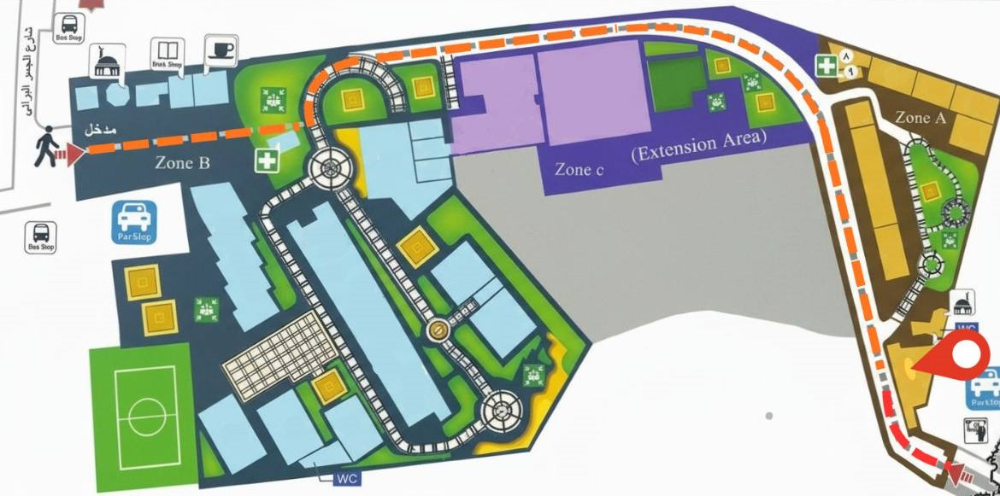

مبنى علوم الحاسب
عن هذا المكان
يضم معامل البرمجة وقاعات المحاضرات الخاصة بقسم علوم الحاسب ومكاتب الأساتذة والمعامل الذكية.
الموقع
المنطقة الأكاديمية - المنطقة C بجوار مبنى الهندسة
يضم معامل البرمجة وقاعات المحاضرات الخاصة بقسم علوم الحاسب ومكاتب الأساتذة والمعامل الذكية.
المنطقة الأكاديمية - المنطقة C بجوار مبنى الهندسة